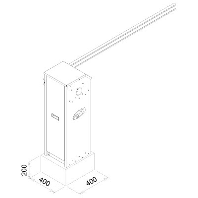
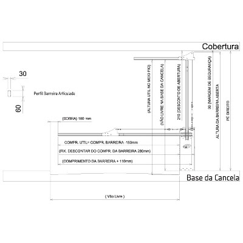
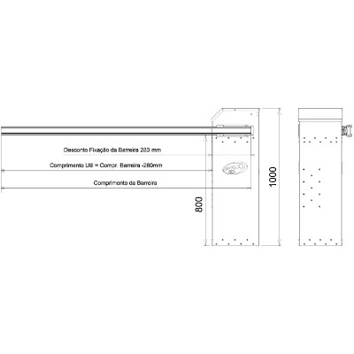

SEM PARAR





Cancela automática com gabinete de aço galvanizado com tratamento anticorrosivo e pintura eletrostática que garantem grande resistência contra a ação do tempo. Com barreira de PVC, que pode ser fixada em qualquer lado do corpo da cancela, conta ainda com sistema de escamoteamento para destravamento manual. A cancela Sem Parar é indicada para locais com elevado fluxo de veículos como pedágios.
Especificações
MODELO: Barreira linear
| Comprimento da Barreira | Ciclos/Hora | Tempo de Abertura (Ajustável) | Tempo de Fechamento (Ajustável) | Tensão (V) | Redutor |
|---|---|---|---|---|---|
| 2,5 a 3,0 m | 1200 | 0,7s (mínimo) | 0,7s (mínimo) | 127 / 220 | Banhado à óleo |
MODELO: Barreira Articulada
| Comprimento da Barreira | Ciclos/Hora | Tempo de Abertura (Ajustável) | Tempo de Fechamento (Ajustável) | Tensão (V) | Redutor | Perfil da Barreira |
|---|---|---|---|---|---|---|
| 3,0 m | 580 | 0,7s (mínimo) | 0,7s (mínimo) | 127 / 220 | Banhado à óleo | Retang. 60x30mm |